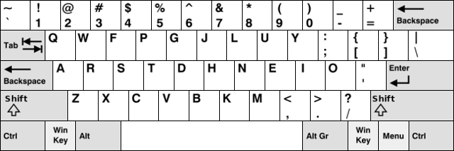

You are viewing the documentation for the develop branch. The documentation for the release version is here .
keyboard-layout layer
Table of ContentsClose
1. Description
This layer configures some key bindings in Spacemacs, to make it compatible with
keyboard layouts that differ from the traditional en-us QWERTY layout.
1.1. Features:
- Support alternative keyboard layouts within Spacemacs
- Remap navigation commands to the homerow of your chosen layout
- Remap missing commands automatically to elsewhere in the layout
2. Installation
To use this configuration layer, add it to your ~/.spacemacs. You will need to
add keyboard-layout to the existing dotspacemacs-configuration-layers list
in this file. You can then select the desired layout by specifying the
kl-layout variable:
(setq-default dotspacemacs-configuration-layers '( (keyboard-layout :variables kl-layout 'dvorak)))
3. Configuration
3.1. Enable/Disable package configurations
This layer can be customized with two variables:
- kl-enabled-configurations
- kl-disabled-configurations
The first one is used to set the list of configurations to activate, and the
second one to prevent loading certain configurations. If the
kl-enabled-configurations variable is nil, (default: nil), then all
configurations are loaded. Otherwise, only the listed configurations are loaded.
Any configuration listed in kl-disabled-configurations will never be loaded,
whether it is in the enabled list or not (default: nil).
(setq-default dotspacemacs-configuration-layers '( (keyboard-layout :variables kl-layout 'dvorak kl-disabled-configurations '(org magit))))
3.2. Add/Override key bindings
It is possible to override or add key bindings, by defining functions named
kl/pre-config-<NAME> and kl/post-config-<NAME> in dotspacemacs/user-init.
They are called just before and after the actual configuration of the key
bindings in this layer. You don't have to think about when to apply the
configuration by yourself. <NAME> is the name of the configuration you want
to customize, they are listed under the Configuration section.
Example:
(defun kl/post-config-company () "Company delete backward." (kl/set-in-state company-active-map (kbd "C-w") 'evil-delete-backward-word))
Note: If you define some of these functions in your own layer, then make sure
that the keyboard-layout layer is placed after it in the
dotspacemacs-configuration-layers list.
4. Concept
This package first swaps the traditional hjkl movement keys, with their
equivalent keys in the destination layout. It then tries to correct the bugs,
that were introduced by these changes in other parts of Spacemacs. This layer
only tries to make these changes when the letters are used for movements.
The equivalent remapping is also made for uppercase letters, CTRL+KEY,
META+KEY and leader key bindings such as (SPC …), whenever it makes sense.
In some cases the remapped keys won't follow these conventions, mainly because there are better alternatives, or because some movements don't make sense.
For example: In the magit status buffer, the c key is bound to commit by
default. If we want to follow the conventions, then it should be remapped to
"move left" in the bepo layout, but since operations in magit are done line by
line, then there's no reason to move left, and we won't remap the c key.
5. Keyboard layouts
The following keyboard-layouts are available with this layer:
5.1. Bepo

Bepo is a keyboard layout that's optimized for the French language.
The mapping correction is the one proposed for vim on the official Bepo wiki.
- The
bepolayout: matches Vims movements keys:c → ht → js → kr → l
- The lost keys are remapped as follows:
h → rj → tk → sl → c
Some Bepo keys are not used in the traditional mapping, mainly because they are
not on the en-us keyboard layout. They are used as aliases for other
shortcuts:
- Map the unused
ékey as an alias forw, it's more useful in vim mode:é → wÉ → W
- Map indentation to direct-access keys:
» → >« → <
Some default configurations are also not optimal for vim, so the following defaults are changed:
- Change the
evil-escapecombination to something that's faster to type, while being nearly nonexistent in French or English words:fd → gq
- In
avy, the keys that select words/lines are remapped to the 8 characters under the home row fingers:a u i e t s r n
Note: There's one difference from the wiki version: w is not remapped to
C-w. This avoids having to change its meaning in other modes. Spacemacs
already provides SPC w for working with windows.
5.2. Dvorak
Dvorak is a keyboard layout, that's optimized for the English language. It rearranges the keys, to require less finger movements away from the home row.
The most common Dvorak layout is called Dvorak Simplified Keyboard (referred to as just Dvorak keyboard or Dvorak layout). It comes pre-installed on most operating systems.
Dvorak Simplified Keyboard (US layout):
Programmer Dvorak:
There's also a sub-layout called Programmer Dvorak. It reorders the number and symbol keys, to make it easier to type common programming symbols, without having to hold down the shift key. The keys that differ from the Dvorak Simplified Keyboard are shown in blue.
This Spacemacs Keyboard Layout layer has two Dvorak movement key variants:
The dvp variant: matches Vims movement keys:
d → hh → jt → kn → l
The lost keys are remapped as follows:
j → dk → tl → n
The dvorak variant: uses the home row, which is shifted 1 key to the right of
Vims movement keys.
hdoesn't need to be remapped, it's already under the index finger.t → jn → ks → l
The lost keys are remapped as follows:
j → tk → nl → s
5.3. Colemak
Colemak is a modern alternative to the QWERTY and Dvorak layouts. It is designed for efficient and ergonomic touch typing in English. More info can be found on the Colemak website.

This layer offers four flavors of Colemak bindings:
colemak-hneiremapsHJKLtoHNEI, keeping the same key location; useful for people used to theHJKLscheme on a Qwerty keyboard.colemak-neio-literalremapsHJKLtoNEIO, shifted one key to the right for easier access. It has easier access to new line mode (o).colemak-neio-invertedremapsHJKLtoNEIO, shifted one key to the right for easier access. It has easier access to insert mode (i) (L, instead ofK).colemak-jkhlremapsHJKLtoJKHL, switching the direction of the keys without disturbing any other binding.
Note: for technical reasons (see GH-7178), when using colemak-jkhl, the
kl/pre-config-evil and kl/post-config-evil hooks will be run twice.
5.4. Workman
Workman is an English-optimized keyboard layout that's designed to, among
other things, reduce finger travel-distance, and balance the load equally
between hands. It is meant to function particularly well in conjunction with
ortholinear ('matrix' or 'grid') keyboards, such as the one depicted in the
diagram below. More information can be found in the Workman section, of the
wikipedia keyboard layout page.
As recommended in this blog post: Workman layout for Vim, this layout substitutes the following keys with these mnemonics:
- (y)ank -> (h)aul
- Search (n)ext -> (j)ump
- (e)nd word -> brea(k) of word
- (o)pen new line -> (l)ine
- The lost keys are remapped as follows:
h → yj → nk → el → o
5.5. Neo
Neo is a ergonomic keyboard that is optimized for German. More information can be found on the website.
The Neo layout has six layers, here is only the first:
6. Package Configurations
The available configurations are:
- ace-window
- avy
- comint
- company
- ediff
- elfeed
- evil
- evil-escape
- evil-evilified-state
- evil-surround
- eyebrowse
- flycheck
- helm
- imenu-list
- ivy
- magit
- mu4e
- neotree
- org
- org-agenda
- ranger
- twittering-mode
7. Key bindings
This layer tries to bind keys automatically in a lot of modes. That makes it difficult to list them all. For example the key bindings change if:
- You chose to use a different keyboard layout.
- You chose to be on the dark side by using evil (because they have :cookie: obviously).
- You chose to use a layer, written with :heart:, that try to solve the induced mess.
So the price you have to pay is the absence of a key bindings list.
8. Image sources
- The keyboard-layout layer logo is a modified image from openclipart.org, and is under the public domain.
- The Bepo logo and layout images, are from the official bepo website. (the layout image has been modified).
- The Dvorak Simplified layout image is a modified image from Wikipedia.
- The Programmer Dvorak layout image is a modified version of the Dvorak Simplified layout image.
- The Colemak layout image is a modified version from Wikipedia.
{kind=link}
{kind=link}
They are all licensed under the CC-BY-SA.